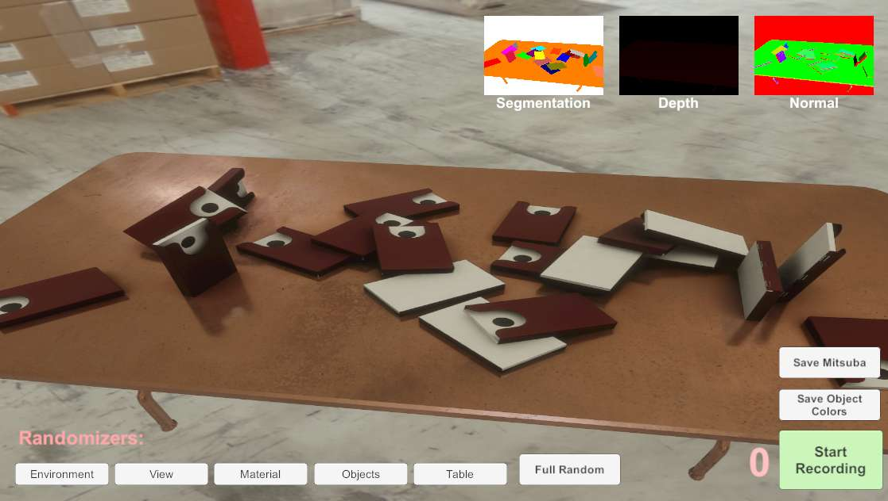
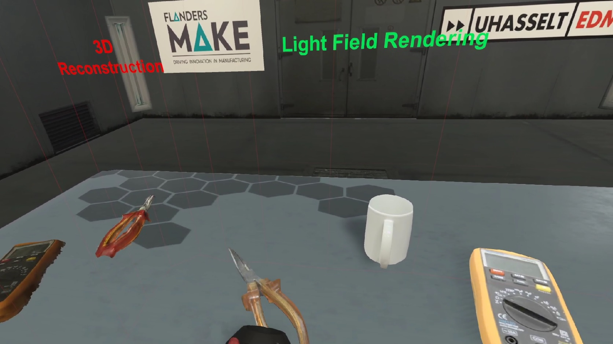

Researcher - Expertise Centre for Digital Media - Hasselt University

Research Projects
2019-...
 |
PILS SBO
The project aims to reduce the deployment costs of computer vision systems for quality control in manufacturing and assembly, by virtue of requiring less data acquisition and labeling effort (i.e. supervision) while increasing the robustness. The main goal of this project is to research how the amount of real-world training data can be reduced to make visual inspection algorithms work in a low volume manufacturing context. A common approach to cope with a small training data set is data augmentation: slightly distorting the available data points to create new points that still belong to the same category. In vision, this usually consists of randomly applying straightforward variations such as cropping, rotating, scaling, mirroring, color balancing, and/or adjusting brightness of the entire collection of training pictures to create many slightly modified copies. The actual products are three-dimensional objects and their visual appearance is governed by complex material properties, lighting conditions, and geometrical detail. This project will try to accomplish this by integrating computer graphics and computer vision technology to generate synthetic variations of the above-mentioned complex visual effects. Furthermore, synthetic defects can be introduced. In this way, a large labelled synthetic data set is obtained and can be used as training input for a visual inspection algorithm. The framework developed in this project can be used to significantly accelerate the development of specialized machine learning algorithms to identify a product, perceive its pose, detect defects, and track the progress of assembly.
[website]
 |
2018-...
|
FLEXAS-VR SBO
An image-based capturing method of assembly workstation resources. This task will focus on setting up such an image-based capturing approach. The initial focus will be
on a monocular handheld capturing device, such as a portable camera. Poses of the camera will be
estimated by using a Simultaneous Localization and Mapping (SLAM) algorithm or an offline
calibration process. Depending on the required quality, certain markers will have to be placed within
the captured scene. Otherwise, natural feature tracking will be utilized as a fallback approach. Once
the images are captured, they will have to be compressed in a format that allows rapid low-latency
streaming and decoding on the GPU. Most existing compression formats, such as H.264, are
sequential in nature and do not allow for random access to frames. In this task, an efficient retrieval
scheme will be devised to get around this limitation.
[website]
 |
2018-2019
 |
ImmCyte - Immuno Cytometry
This project’s aim is to improve insight in and exploit immune cell complexity in chronic infection disease models and in neurodegeneration, by means of new cellular phenotyping technologies (Single Cell Sequencing and Multi-Parametric High-Content Imaging on non-adherent cells).
Single-Cell Image and Data Analysis: To develop methods for large scale data handling and processing (>10X to current image sets from standard High-Content Imaging) To develop methods for cell segmentation, feature extraction and cell classification To enable analysis of large scale heterogeneous cell populations, utilizing high-dimensional phenotypic signatures |
2017
2015-2016
|
HiViZ - iMinds visualization research program
[website]
|
2011-2015
|
Remixing Reality
Computer-generated graphics and imagery have become ubiquitous in numerous fields including film, computer games, medical and scientific visualization, architecture, tele-collaboration, virtual walkthroughs, advertising, and social internet applications. However, generating and integrating truly realistic synthetic imagery and photographs or video remains cumbersome, challenging and prohibitively computationally expensive. We propose to overcome these difficulties by developing a novel representation of moving 3D objects and scenery, that will bridge the gap between geometry-based approaches (such as triangle meshes) traditionally used for modeling and rendering, and pixel-based approaches traditionally used for images and videos. By combining the advantages of both approaches, we will enable new applications such as interactively navigating 3D video environments augmented with virtual objects (and vice versa) while maintaining fully realistic appearance and lighting.
|
2011-2014
|
SCENE - Novel Scene Representation for Richer Networked Media (EU)
The objective is to create and deliver richer media experiences. The SCENE representation and its associated tools will make it possible to capture 3D video, combine video seamlessly with CGI, and manipulate and deliver it to either 2D or 3D platforms in either linear or interactive form.
[website]
Scene researches, develops and demonstrates:
|